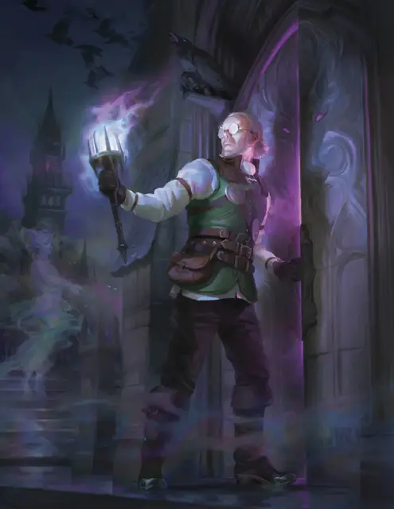

Рудольф ван Рихтен
Rudolph van Richten
Средний Гуманоид (Человек), Принципиальный Добрый, именной НИП

Класс Защиты 13 Инициатива +2 (12)
Хиты 105 (14к8 + 42)
Скорость 30 футов
| мод | спас | ||
|---|---|---|---|
| СИЛ | 9 | −1 | −1 |
| ЛОВ | 14 | +2 | +2 |
| ТЕЛ | 16 | +3 | +6 |
| мод | спас | ||
|---|---|---|---|
| ИНТ | 17 | +3 | +3 |
| МДР | 18 | +4 | +7 |
| ХАР | 15 | +2 | +2 |
Чувства пассивное Восприятие 17
Языки Общий, Бездны, Инфернальный, Эльфийский
Опасность 5 (1 800 опыта; БВ +3)
Особенности
Щит Эразма. Когда Рудольф Окровавлен, он обладает Сопротивлением к Психическому, Силовому урону и урону Ядом.
Действия
Мультиатака. Рудольф совершает три атаки Серебряным мечом-тростью или Одноручным арбалетом в любой комбинации.
Серебряный меч-трость. Бросок рукопашной атаки: +5, досягаемость 5 фт. Попадание: 5 (1к6 + 2) Рубящего урона плюс 5 (2к4) урона Излучением.
Одноручный арбалет. Бросок дальнобойной атаки: +5, дистанция 30/120 фт. Попадание: 5 (1к6 + 2) Колющего урона плюс 5 (2к4) урона Излучением.
Изгнание зла (Перезарядка 5–6). Спасбросок Харизмы: Сл 15, все существа по выбору Рудольфа в 30-футовом Конусе. Провал: 18 (4к8) Психического урона, и цель Испугана до конца следующего хода Рудольфа. Успех: Только половина урона.
Бонусные действия
Оккультная подмога (2/день). Рудольф сотворяет Лечение ран, Рассеивание добра и зла или Убежище (заклинательная характеристика — Мудрость, Сл спасброска заклинаний 15).
Бонус мастерства +3
Рудольф ван Рихтен
Проклятый охотник на вампиров
В лучшие свои дни Рудольф ван Рихтен жил с женой Ингрид и сыном Эразмом в фамильном имении близ Ривалиса, что в домене Даркон. Дерзкий доктор Рудольф перешёл дорогу Раданавичам — семье разбойников, прикидывавшихся вистани. Когда он отказался лечить смертельно больного члена семьи, атаманша шайки, Ирена Раданавич, приказала выкрасть его сына. Мальчика продали вампиру барону Метусу. Рудольф преследовал Раданавичей, разбил их преступное гнездо и покарал Ирену — но прежде чем пасть, она изрекла своё проклятие: «Живи вечно средь чудовищ и смотри, как все, кого ты любишь, гибнут от их когтей».
Когда Рудольф наконец выследил пропавшего сына, проклятие уже сбылось: Эразм был обращён в вампирского фамильяра Метуса. Рудольф оборвал мучения сына, вогнав ему в грудь осиновый кол. Этот жестокий поступок породил новое кровопролитие: барон Метус отомстил за убитого слугу, лишив жизни Ингрид, жену Рудольфа. Хотя доктор в конце концов упокоил злого барона, ужас от гибели семьи преследует его до сих пор.
Рудольф посвятил себя разоблачению зол, что таятся в Землях Туманов: он истребляет чудовищ, снимает проклятия и даёт другим орудия для той же борьбы. Его слава и труды разлетелись по доменам. Опубликованные работы — «Руководство ван Рихтена по вампирам» и «Руководство ван Рихтена по оборотням» — принесли ему как сторонников, так и хулителей среди учёных кругов. Однако его благие дела затронули многие жизни и повсюду снискали верных союзников.
Рудольф живёт в Морденшире, что в домене Мордент. Из скромной лавки травника он ведёт переписку с учёными и охотниками на чудовищ со всех доменов, исследует жутких созданий и мастерит орудия против зла. Часто он странствует в иные домены ради изысканий или помощи друзьям.
За годы Рудольф успел разделить приключения с такими героями, как охотник на чудовищ Джордж Везермэй и детективы Аланик Рэй и Артур Седжвик. Новое поколение — Эсмеральда д’Авенир, а также сёстры Дженнифер и Лори Везермей-Фоксгроув — училось у доктора и продолжает его борьбу.
Незримо для Рудольфа за ним приглядывает Эразм. Дух творческого и чуткого юноши стал бесплотным спутником старшего ван Рихтена: он помогает отцу и его союзникам тихими подсказками и ободрением.
Рудольф знает, что годы или опасности его пути когда-нибудь положат конец его трудам. Всё чаще он обращает взор к Баровии и её вампиру-повелителю, Страду фон Заровичу, веря, что там сокрыты ключи к уничтожению множества зол по всем Землям Туманов.